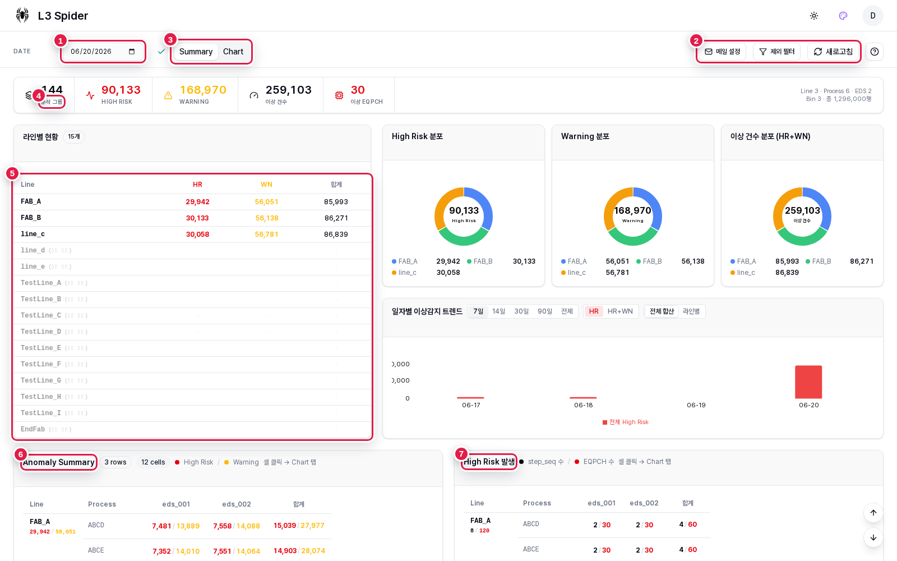
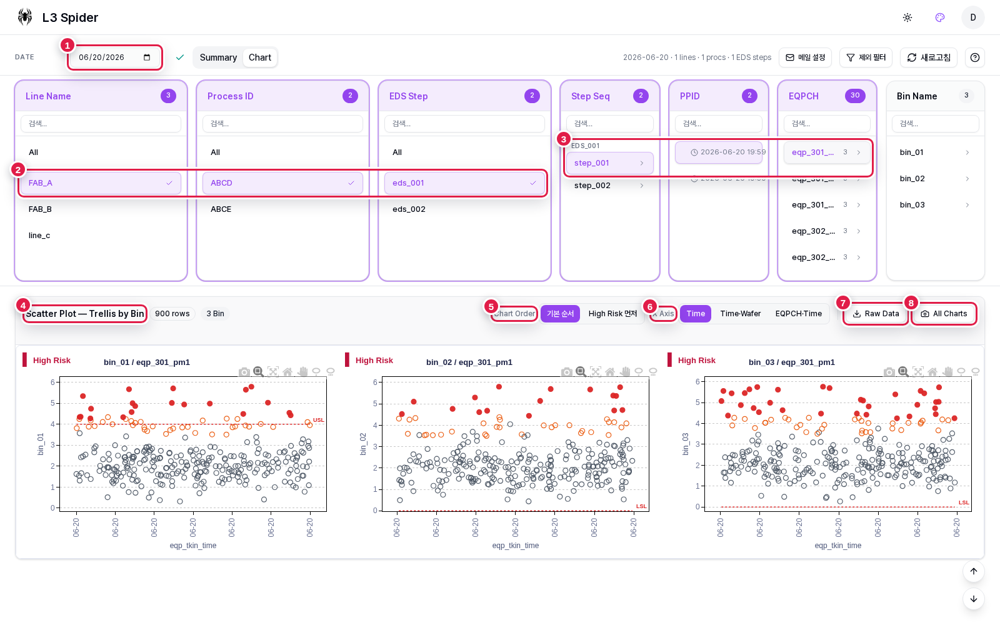
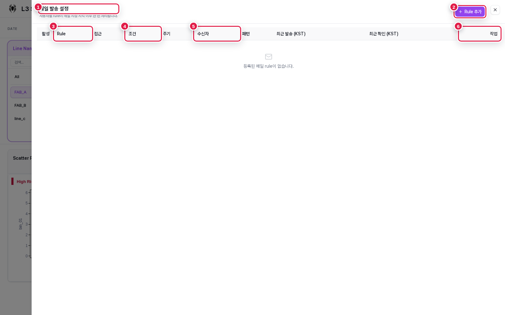
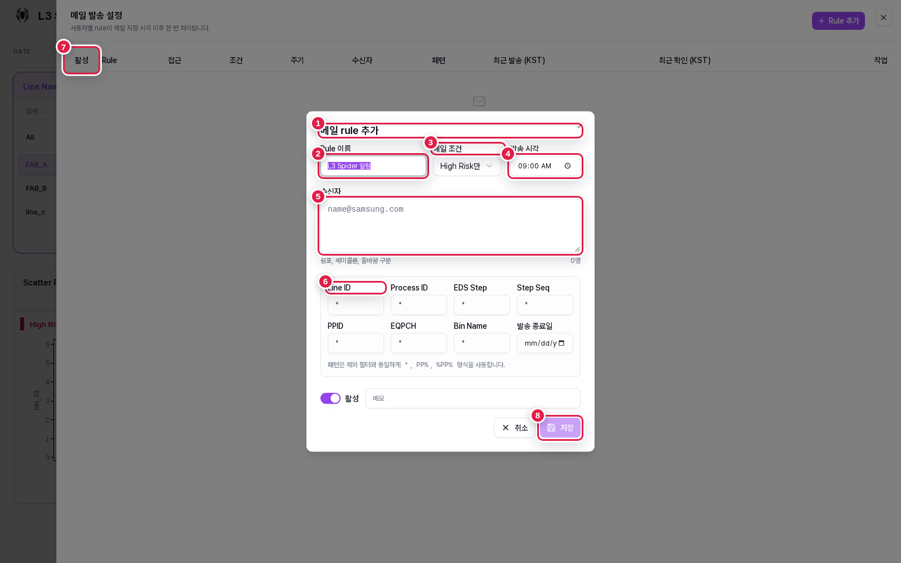
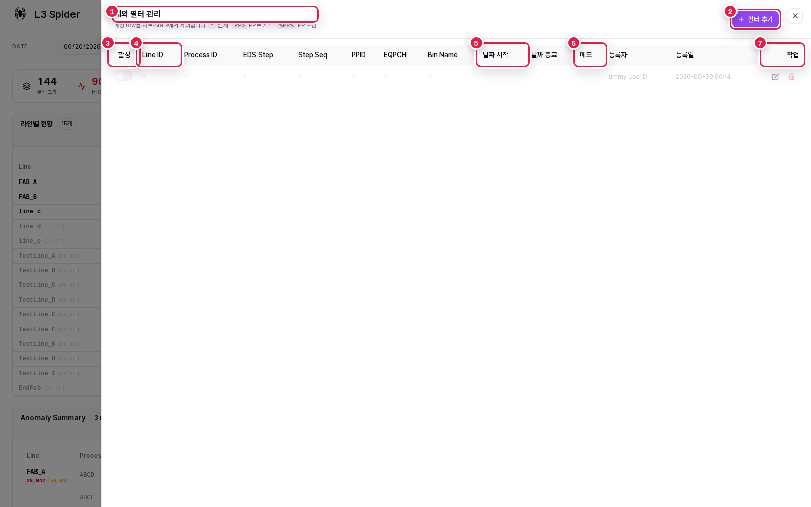

L3 Spider는 날짜별 이상감지 결과를 Summary에서 빠르게 훑고, Chart에서 Line/Process/EDS/Step/PPID/EQPCH 단위로 파고드는 화면입니다. 각 캡처의 빨간 번호는 실제 UI 영역을 가리키며, 아래 설명은 그 영역이 무엇을 하는지 정리합니다.
Summary 탭은 특정 날짜의 전체 이상감지 결과를 집계합니다. KPI 카드로 규모를 확인하고, 라인별 테이블과 분포 차트로 어느 라인에 이상이 몰렸는지 본 뒤, 하단 매트릭스 셀을 눌러 Chart 탭으로 이동합니다.

조회 기준 날짜입니다. 날짜를 바꾸면 Summary 집계와 Chart 선택 후보가 같은 날짜 기준으로 다시 계산됩니다.
메일 설정은 자동 알림 rule을 관리하고, 제외 필터는 노이즈 조합을 집계에서 빼며, 새로고침은 최신 메타데이터를 다시 불러옵니다.
Summary는 날짜 전체 집계, Chart는 선택 조건별 scatter trellis 분석 화면입니다.
분석 그룹, High Risk, Warning, 이상 건수, 이상 EQPCH 수를 한 줄로 보여줍니다. 오른쪽에는 Line/Process/EDS/Bin 요약도 함께 표시됩니다.
Line별 HR/WN/합계를 비교합니다. 이상이 없는 라인도 흐리게 표시되어 전체 커버리지와 이상 집중 라인을 같이 볼 수 있습니다.
Line, Process, EDS Step별 High Risk/Warning 건수를 보여줍니다. 셀을 클릭하면 같은 조건으로 Chart 탭이 열립니다.
step_seq 수 / EQPCH 수를 보여줍니다. 건수가 같아도 여러 step과 장비 채널에 퍼졌는지 판단할 때 봅니다.
7,481 / 13,889처럼 보이면 앞 숫자는 High Risk, 뒤 숫자는 Warning입니다.
빨간 값이 큰 셀을 먼저 보고, 오른쪽 High Risk 발생 범위에서 번진 정도를 확인한 뒤 Chart로 들어가는 흐름이 가장 빠릅니다.
Chart 탭은 선택 조건을 단계적으로 좁힌 뒤 wafer/lot 단위 산점도를 보여줍니다. EQPCH를 고르면 Bin별 trellis가 열리고, Bin을 고르면 EQPCH별 trellis로 전환됩니다.

현재 차트가 어떤 날짜 데이터인지 고정합니다. 선택 완료 시 날짜 옆 체크 표시가 보입니다.
Line Name, Process ID, EDS Step을 고릅니다. 각 컬럼 상단 숫자는 현재 날짜에서 선택 가능한 후보 수입니다.
Step Seq, PPID, EQPCH를 순서대로 선택합니다. PPID 칼럼의 시간은 해당 조합의 마지막 TKin Time입니다.
선택된 EQPCH의 이상 Bin을 작은 차트로 나눠 보여줍니다. 빨간 점은 High Risk, 주황 점은 Warning, 회색 점은 정상 기준입니다.
기본 순서 또는 High Risk가 있는 차트를 앞쪽에 배치하는 순서를 선택합니다. 이슈가 많은 차트를 먼저 볼 때 사용합니다.
시간 기준, 시간+Wafer 기준, EQPCH+Time 기준으로 X축을 바꿉니다. 같은 데이터도 축을 바꾸면 군집 패턴이 다르게 보입니다.
현재 선택 조건의 원천 row를 CSV로 내려받아 별도 분석이나 공유에 사용합니다.
현재 trellis 전체 차트를 이미지로 캡처합니다. 보고서 첨부용 전체 차트 묶음을 만들 때 사용합니다.
메일 설정 시트는 특정 이상 조건이 발생했을 때 지정 시각 이후 발송할 rule을 관리합니다. 현재 캡처에서는 등록된 rule이 없지만, 목록 헤더가 rule이 어떤 기준으로 관리되는지 보여줍니다.

메일 rule을 조회, 추가, 수정, 삭제하는 시트입니다. 사용자가 등록한 rule은 지정 시각 이후 한 번 처리됩니다.
새 메일 rule 입력 창을 엽니다. 아래 Rule form 화면과 연결됩니다.
Rule 이름과 공유 권한을 관리합니다. 접근 권한은 owner/read/write 레벨로 분리됩니다.
High Risk만 보낼지, Warning까지 포함할지와 발송 주기를 확인합니다. 현재 구현은 daily schedule 중심입니다.
수신 이메일과 Line/Process/EDS/Step/PPID/EQPCH/Bin 패턴을 요약 표시합니다.
기존 rule을 수정, 삭제, 테스트 발송하거나 권한을 조정하는 영역입니다.
Rule 추가 창에서는 발송 조건, 발송 시각, 수신자, 적용 패턴을 한 번에 정합니다.
패턴 필드는 *, PP%, %PP% 같은 와일드카드 형식을 사용할 수 있습니다.

* 상태입니다.새 rule 생성 모달입니다. 수정 모드에서는 제목이 메일 rule 수정으로 바뀝니다.
목록에서 식별할 이름입니다. 예: 특정 Line의 High Risk 알림.
High Risk만 또는 Warning + High Risk 중 발송 대상 severity를 고릅니다.
Asia/Seoul 기준 발송 기준 시각입니다. rule 처리는 이 시각 이후의 대상 결과를 확인합니다.
쉼표, 세미콜론, 줄바꿈으로 여러 이메일을 입력할 수 있습니다. 오른쪽 아래에 수신자 수가 표시됩니다.
Line ID, Process ID, EDS Step, Step Seq, PPID, EQPCH, Bin Name, 발송 종료일을 지정합니다. 비워두거나 *이면 전체입니다.
rule을 켜고 끄는 스위치입니다. 비활성 rule은 저장되어 있어도 발송 대상에서 제외됩니다.
입력한 조건을 저장합니다. 수신자 형식이나 필수값 문제가 있으면 저장 전에 오류가 표시됩니다.
제외 필터는 반복적으로 의미 없는 이상으로 보이는 조합을 Summary, Chart 후보, 메일 처리에서 제외할 때 사용합니다. 특정 기간에만 적용할 수 있고, 메모로 등록 사유를 남길 수 있습니다.

집계에서 제외할 조합을 관리하는 시트입니다. 적용된 필터는 날짜별 메타와 요약 계산에 반영됩니다.
새 제외 규칙 행을 추가합니다. 추가 후 저장 아이콘으로 확정합니다.
필터를 즉시 켜거나 끕니다. 비활성 필터는 목록에는 남지만 계산에는 적용되지 않습니다.
Line ID부터 Bin Name까지 제외 조건을 적습니다. 메일 rule과 동일하게 *와 와일드카드를 사용할 수 있습니다.
필터 적용 기간입니다. 특정 이벤트 기간만 제외하려면 시작과 종료를 함께 넣습니다.
제외 사유, 요청자, 이슈 번호 등을 남깁니다. 나중에 필터를 검토할 때 기준이 됩니다.
필터 행을 수정하거나 삭제합니다. 삭제는 적용 이력 관리 기준에 맞춰 신중하게 처리합니다.
{kind=link}
{kind=link}
{kind=link}
{kind=link}
{kind=link}